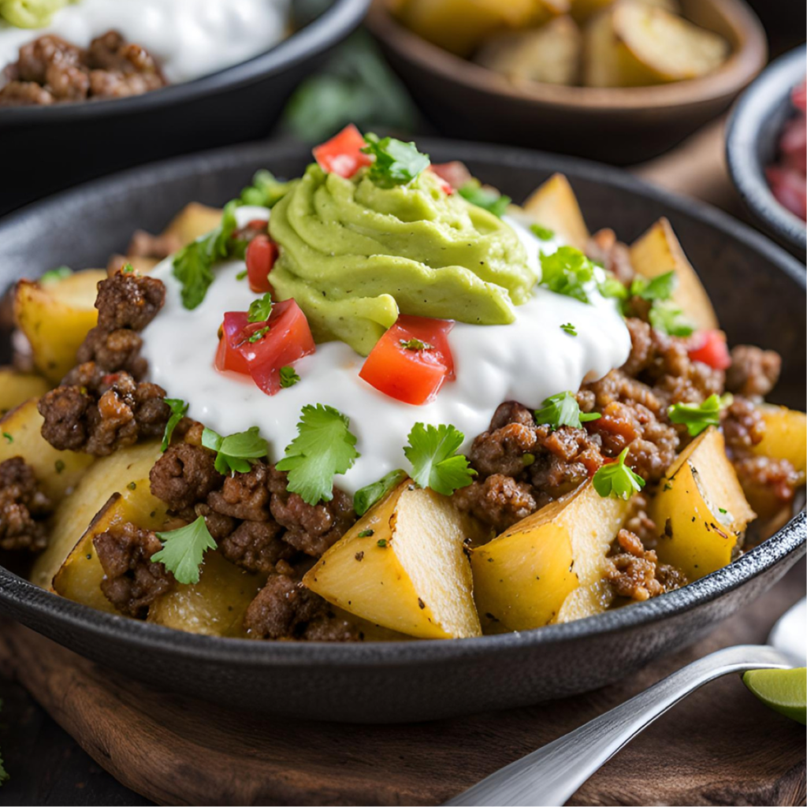

Ingredients
Pico De Gallo
Guacamole
Optional
Directions
Pico De Gallo
- Combine all ingredients into a bowl.
- Add juice from half of your lime.
- Add salt (to your taste).
- Mix well.
Guacamole
- Take your two avocados into a bowl and mush until satisfied.
- Add your onion, cilantro, garlic powder and salt (both to taste).
- Add juice from your lime.
- Mix well.
Potatoes
- Preheat oven to 425°.
- Wash and dry your potatoes and chop into small cubes.
- In a large bowl with your potatoes, add olive oil and your taco seasoning (along with any perferred seasonings).
- Mix well.
- Lay out your seasoned potatoes onto a baking sheet and place into the oven for 30-35 minutes.
- Once potatoes are out of the oven, wait for them to cool for a few minutes before removing them from the baking sheet.
Ground Beef
- On a large skillet with medium high heat, add a bit of olive oil.
- Add your ground beef and break it up in the pan.
- After a 2 minutes, add your taco seasoning (and any other perferred seasonings).
- Mix well and add a small bit of water for extra moisture.
- Cook for 8-10 minutes, mixing often until cooked to your liking.
- OPTIONAL: While mixing, add a bit of your shredded cheese.
OPTIONAL: Add cheese and sour cream on top.